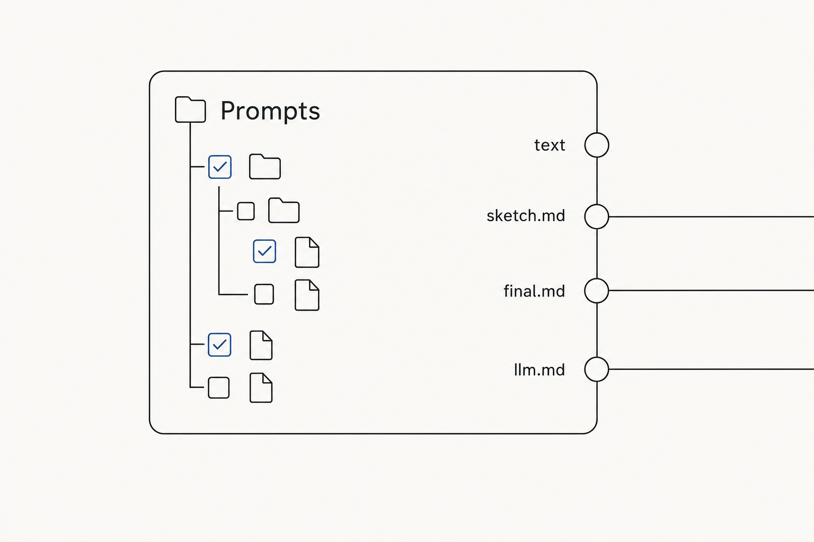
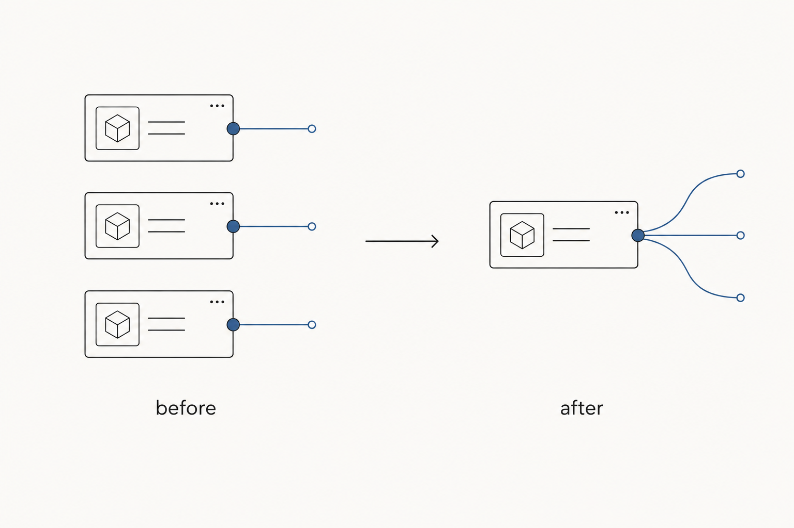

Plan: Prompts multi select

Purpose
One Prompts node hands out several prompt files at once, one output per file, so a prompt set is one node instead of one node per file.
Problem
bakery-final-03 holds four Prompts nodes (#4349, #4345, #4530, #4350), each a full copy of the same panel pointed at a different file. Every extra prompt is another copy to place, path, paint and keep in step.
Solution
- A tick box on every file row, the Recipes one:
iconLead("ticked"/"unticked")in front of the name. A click on the box ticks that file and opens nothing. Shift-click ticks the range from the last tick. A click on the name still opens the file, as today. - Each tick adds one output, labelled with the file name without
.md(render-preamble-sketch). Two ticked files with the same name in different folders are labelled by their path under the root. textstays output 0 and stays the open file. The 12 wires onbakery-final-03do not move. Nothing ticked is today's node exactly.- Outputs follow tick order. Unticking removes that output and its wires. The wires after it stay on their files. Rename and delete in the tree carry the tick.
- The run reads each ticked file from disk. The open file's unsaved edit wins for that file. A ticked file that is gone fails the run and names it. Editing a ticked file on disk re-runs the node.
- Recipes leave the ticks alone. The ticks are wiring, not a setting: a recipe holding fewer ticks would cut wires on every switch. They are never captured and a recipe load never removes an output.

Where the ticks live: a hidden files input (a JSON list of paths under the root), appended after text. Python declares 16 prompt_N STRING outputs and the canvas shows as many as are ticked, the Asset Recipe pattern. An old workflow loads files empty. A 17th tick is refused with a toast.
Relevant Files
-
comfyui-nodes/-
py/-
pipeline/- existing
nodes.py—SymbioticaPromptBlock:filesinput, 16prompt_Noutputs, read the ticked files, fingerprint on their stamps
- existing
- existing
_recipes.py—filesis saved but never captured, and a base saved before it still generates
-
-
web/js/- existing
prompts.js— tick boxes, the outputs, rename/delete carrying ticks, reconcile on load - existing
recipes.js—settableWidgetsskipsfileson a Prompts node (one line, beside your uncommitted 81)
- existing
-
tests/- existing
test_nodes_prompt_blocks.py— outputs in tick order, unsaved edit wins, a missing file fails - existing
test_recipes*.py— generate on a 5-value and a 6-value Prompts node,filesnever written - existing
js/prompts.test.mjs— tick, shift-tick, untick middle, rename, reopen
- existing
-
Implementation Phases
IMPORTANT: Execute every phase and task step by step, in order, top to bottom.
Status markers: [] idle · [wip] in progress · [x] complete · [f] failed. All start as []; the Build Plan workflow updates them as it works.
[x] Phase 1: Python node (about 45 minutes)
The node takes the list and answers one string per tick.
1. Schema
[x]Appendio.String.Input("files", default="")aftertext. Never before it.[x]Keeptextas output 0, thenprompt_1..prompt_16asio.String.Output.
2. Execute and cache
[x]Parsefiles. For each path,read_file(path, rel), except the openfolder/file, which answerstext. Pad the rest with"".[x]fingerprint_inputs: the inputs plusstamp(path, rel)of every ticked file, the Prompt Load rule.
3. Recipes server side
[x]In_widget_positions, placefilesby declared order like a wired widget, so the merge never needs it captured.[x]A Prompts node saved beforefilesholds 5 values: names without the panel match it, which is how the frontend pairs them on load.
4. Testing Strategy
pytest with the comfy_api stub, against temp prompt folders.
[x].venv/bin/pytest tests/test_nodes_prompt_blocks.py tests/test_recipes*.py— tick order, edit wins, missing file fails, old and new saves generate
[x] Phase 2: Canvas (about 1.5 hours)
All in prompts.js. No new web/js file, so Modal gets it on the next push.
1. Tick boxes
[x]HidefileswithhideWidget. Read and write it as a JSON list.[x]InmakeRow, file rows get the Recipes box aslead. Box click toggles, shift-click ranges over visible file rows.
2. Outputs
[x]syncOutputs: outputs =text+ one per tick. Nameprompt_Nby position,labelthe file name. Remove withremoveOutput(index), which repoints later wires.[x]Run it on tick, untick, rename, delete andonConfigure. Rename and delete edit the list first.
3. Recipes canvas side
[x]settableWidgetsleaves outfilesonSymbioticaPromptBlock, so capture and load never touch it.
4. Testing Strategy
node:test with the comfy stub for logic, then the real thing in local ComfyUI.
[x]node --import ./tests/js/register_hooks.mjs --test tests/js/*.test.mjs— tick, shift-tick, untick middle keeps the third wire, rename, reopen[x]Spare ComfyUI on 8189 with a copy ofbakery-final-03, playwright: tick 3 files on #4345, wire each to PreviewAny, queue, read the 3 texts[x]Same spare: save, reopen, ticks, labels and wires survive. Switch two recipes, outputs and wires survive. Drag the node smaller, it shrinks.
Validation Commands
Execute these commands to validate the entire plan is complete:
[x].venv/bin/pytest— the whole Python suite passes[x]node --import ./tests/js/register_hooks.mjs --test tests/js/*.test.mjs— the whole canvas suite passes[x]/symbiotica/recipes/generateon the spare'sbakery-final-03— every recipe writes, ticks kept from the base[]You, in local Comfy after a restart — tick, wire, queue on your canvas
Notes
Effort
| Part | Time |
|---|---|
| Python node + recipes server side | 45 minutes |
| Canvas: ticks, outputs, recipes skip | 1.5 hours |
| Tests | 45 minutes |
| Local ComfyUI verification | 45 minutes |
| Total | about 3.5 hours |
Risks
- R1
recipes.jshas 81 uncommitted lines of yours. The change there is one condition insettableWidgets. A commit takes only that hunk. - R2 Restart Comfy after this lands: a new input and new outputs register only on start.
- R3 16 outputs is a ceiling. Raising it later is one constant, and appending outputs shifts nothing saved.
Rejected
- Ticks in
node.properties: the run never sees properties, so Python could not read the files. - Ticks captured per recipe: a recipe with fewer ticks cuts wires on every switch.
- One joined output: the draft asks for one output per prompt.
Amendments
- 2026-10-02:
_recipes.pyneeded no change. A saved node listsfilesamong its inputs, so the names match the 6 values exactly, and an old node still holds 5. Held by a test intests/test_recipes.py. - 2026-10-02: generate on the spare refused on a stale group title in the recipes (
##LLM, nowllm-prompt), the same on the unticked file. With that key dropped, 21 of 22 recipes generate with ticks and outputs kept. The 22nd stops on a second stale title,Control Image.